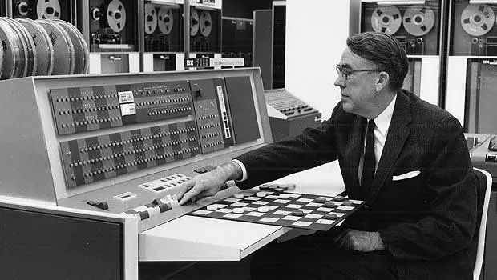
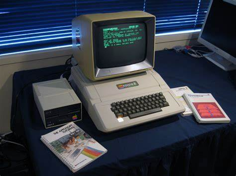

Existem No Total Cinco Gerações De Computadores, São Definidas Por Suas Tecnologias E Componentes Empregados: Válvulas, Transistores, Circuitos Integrados, Microprocessadores E Inteligência Artificial.
A Evolução Dos Computadores:
Segunda Geração [1956-1963]🐱🐉

Características: Menos Dimensões Que A Primeira Menor Peso(Menos De 1 Tonelada) Menos Aquecimento Menor Consumo De Energia Função: Era Usado Apenas Para Calcular Linguagem De Programação: Código De Montagem
Terceira Geração [1964-1971]🔍
Características: Criação Dos Sistemas Operacionais Entrada De Dados Por Dispositivos Periféricos Circuitos Integrados Main-Framas Chegava A Pesar 907KG Funções: Áudio E A Principal Função Que Era Calcular linguagem de programação: COBOL FORTAN Pascal C Basic
Quarta Geração [1971-Atual]👽

Características: Microcomputadores Computadores Portáteis Memória RAM e ROM Entrada De Dados Por Dispositivos Periféricos Uso De Mouse E Teclado Sistemas Operacionais Gráficos Pesava Até 7KG Funções: Calcular Áudio Jogos Vídeos/Filmes E-books Linguagem De Programação: JavaScript Python Java C# Kotlin
Utilidades:
As Duas Primeiras Gerações Eram Usadas Apenas Para Cálculos Saber Utilizalo Era Considerado Uma Profissão Já Na Terceira Geração Foi Criada A Função De Áudio E Na Quarta Geração/Atual O Computador Já é Considerado Algo Doméstico E De "Fácil" Acesso Tem Diversas Funções Como Jogar, Escutar Músicas E Até Ler Livros.